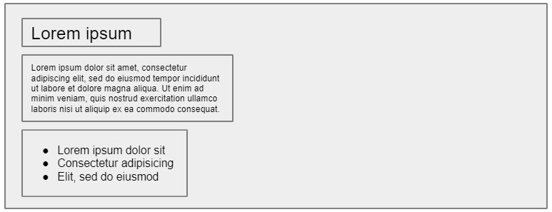
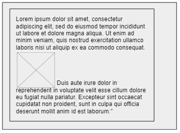
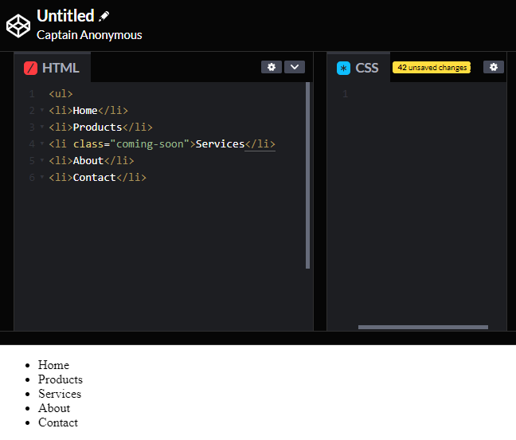
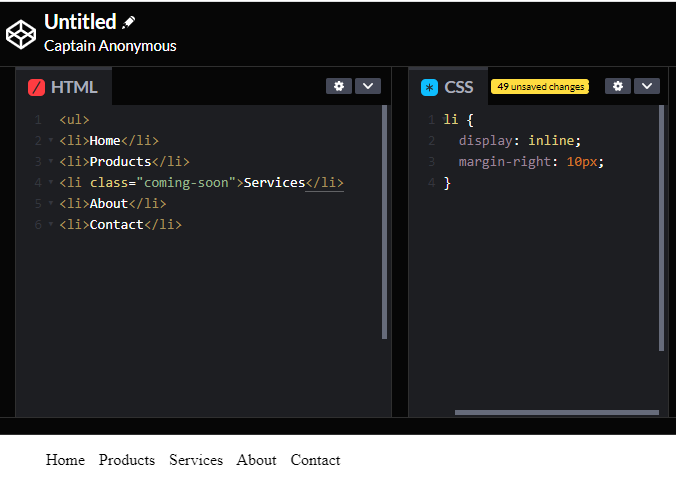
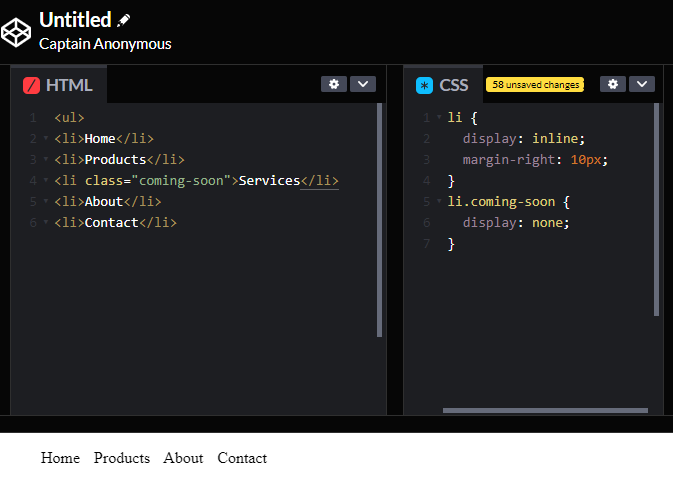

What does it mean to display inline vs inline blocks?
CSS treats each HTML element as if it is in its own box. This box will either be a block-level box or an inline box.
Block elements:
In normal flow (default if not specified otherwise) each element sits on top of the next one. Each element starts on a new line even if previeous elements did not take up the full width of the browser window.
Examples include: <h1> <p> <ul> <li>
Inline elements:
Inline boxes flow between surrounding text.
Examples include: <img>
The display property
The display property allows to turn an inline elent into a block-level element or vice versa.
The values this property can take are:
- Inline: This causes a block-level element to act like an inline element.
- Block: This causes an inline element to act like a block-level element.
- Inline-block: This causes a block-level element to flow like an inline element, while retaining other features of a block-level element.
- None: This hides an element from the page. In this case, the elemnt acts as though it is not on the page at all.
Using display: inline to create a navigation structure
In the following example you can see a list. Each item in the list is usually treated as a block-level element, but the rule for the <li> elements indicates that they should be treated as inline elemts, which means they will sit alongside each other rather than appearing on new lines.
This technique is often used to create navigation for a site.
List in default block display:
List in inline display:
List in inline display with one element hidden:
